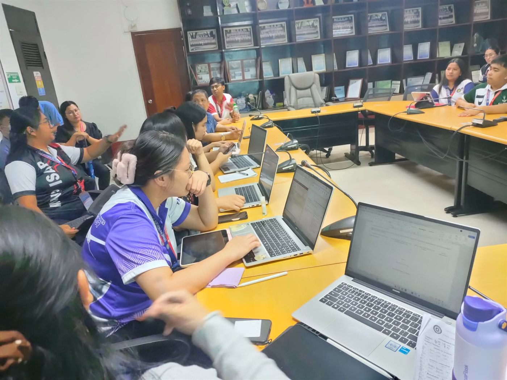

Community ImmersionEvidence-Based Extension Caravans
Students and faculty step into partner barangays to conduct baseline surveys, health screenings, and needs assessments. Every study informs actual municipal public health programs and community extension services.